契約と副作用の境界¶
目的¶
主な関数に、事前条件・事後条件・不変条件 (「契約」) を書き、どの層に属するか (純粋 / 読み取り / 書き込み・起動) を示す。 契約は、AI に実装や変更を頼むときの 指示文 になり、そのままテストの種になる。 読む人は、純粋な層は仕様を読めば足り、副作用の層だけを深く読めばよい。
見るポイント¶
契約の三つの言葉¶
言葉 |
意味 |
docstring のどこに書くか |
|---|---|---|
事前条件 |
呼ぶ側が守ること。破ると、関数は 例外で止まる (黙って続けない) |
|
事後条件 |
関数が約束する結果 |
|
不変条件 |
常に 成り立つこと。入力や環境が変わっても崩れない |
関数・クラスの説明と、このページの表 |
副作用の境界¶
関数を、外の世界に触れるか で三つの層に分ける。外側の層が、内側の層を呼ぶ。内側は、外側を知らない。

層 |
触れてよいもの |
触れないもの |
テストの方法 |
|---|---|---|---|
純粋 |
引数だけ。環境変数は 引数で受ける ( |
ファイル・環境変数 ( |
I/O を禁じた状態で呼び、同じ入力なら同じ出力 を確かめる |
読み取り |
ファイルの読み取り・ディレクトリの列挙 |
書き込み・子プロセス・ネットワーク |
前後で ディレクトリの中身が同じ ことを確かめる |
書き込み・起動 |
ファイルの書き込み・子プロセス |
(制限なし。ただし、安全の約束を守る) |
偽物に差し替える (第 10 回) |
純粋な関数に
environ=None(省略するとos.environ) を許しているのは、呼び出しの手軽さのため です。 純粋として扱うのは、引数environを渡したとき です。テストは、必ず渡します。
読む範囲の決め方¶
レビューの負担を減らすため、深く読む対象を絞ります。
層・性質 |
読み方 |
理由 |
|---|---|---|
純粋・不変の値 |
仕様 (このページの契約) を読めば足りる。実装は、テストが通っていれば、細部まで追わなくてよい |
入力と出力だけで決まり、周りに影響しない |
読み取り |
契約と、何を読むか (どのディレクトリ・どの除外) を確かめる |
読み違えると、検査が空になる (第 9 回の事故) |
書き込み・起動 |
実装を深く読む。特に、秘密・上書き・削除・外部への送信 |
取り返しのつかない変更が起きる場所 |
秘密を扱うもの ( |
層に関わらず、深く読む |
漏れると被害が大きい |
契約の表¶
「検証するテスト」は、実在すること を tests/test_contracts.py が確かめる。
「純粋」「読み取り」の層は、その層の約束を守っていること も、同じテストが確かめる。
関数 |
層 |
事前条件 |
事後条件 |
不変条件 |
検証するテスト |
|---|---|---|---|---|---|
|
純粋 |
|
|
大文字小文字・前後の空白を区別しない。知らない値は、 |
|
|
純粋 |
同上 |
必須の環境変数のうち、未設定・空のものの 名前だけ を、定義の順に返す |
値は、戻り値に入らない |
|
|
純粋 |
|
|
どのモードでも: 上書き・削除・アーカイブをしない。未解決のコメントのあるページを更新しない。 |
|
|
純粋 |
なし (任意の文字列) |
トークンの値 (8 文字以上) を |
トークンの値が、結果に 残らない。トークンを含まない文字列は、変わらない。冪等 |
|
|
純粋 |
なし |
コマンドの文字列を、引数の列に分ける |
|
|
|
純粋 |
なし |
標準の |
直したあと ( |
|
|
純粋 |
なし |
全ての Mermaid ブロックの先頭に、標準の行がある文章 |
冪等。ブロックの外は変えない。閉じていないブロックでも止まる |
|
|
純粋 |
なし |
|
各成分は 2 つ以上のモジュールで、整列されている。呼ぶ順序に依存しない |
|
|
純粋 |
なし |
依存の地図を、Mermaid のコードにする |
同じ地図なら、同じ文字列 (決定的) |
|
|
純粋 |
なし |
docstring が無い項目と、割合の文字列 |
対象が無ければ 100% |
|
|
純粋 |
なし |
必須の項目が 1 つでも失敗していれば 1、でなければ 0 |
必須でない項目の失敗は、終了コードに影響しない |
|
|
純粋 |
なし |
秘密らしき |
戻り値に、値が含まれない。プレースホルダー・環境変数の名前は、秘密とみなさない |
|
|
読み取り |
パッケージの場所に |
モジュールごとの依存を持つ地図 |
ソースを読むだけ ( |
|
|
読み取り |
渡した場所が、実在する (CLI が先に確かめる) |
公開 API の docstring の有無の集計 |
何も書かない。仮想環境・キャッシュを数えない |
|
|
読み取り |
なし |
書き出すファイルと中身の対応 |
ファイルに触れない。同じ指定なら、同じ結果 |
|
|
読み取り |
なし |
|
仮想環境・外部のコードを返さない。何も書かない |
|
|
書き込み・起動 |
既存のファイルが無い ( |
作ったファイルの一覧 |
既存のファイルがあれば、1 つも書かずに止まる |
|
|
書き込み・起動 |
|
Mermaid の画像のファイル |
同じ図は再変換しない。半端なファイルを、他が読まない (原子的な置き換え) |
|
|
書き込み・起動 |
なし |
終了コード (成功 0、失敗 1、使い方の誤り 2) |
トークンの値を、出力に出さない。 |
|
|
書き込み・起動 |
|
Doxygen の XML |
警告は、Sphinx の警告として転送される |
|
(この表の関数名は、docspipeline パッケージの中の名前。Graph.cycles のように、クラスのメソッドも書く。)
使うときの注意¶
契約を変えるときは、表とテストを同じ変更で直す。表だけ・テストだけを直すと、
tests/test_contracts.pyが食い違いを見つける。新しい関数を足すときは、まず層を決める。純粋にできるものは純粋にする (引数で受け取り、結果を返す)。外の世界に触れる部分だけを、薄い外側に置く。
純粋な層で、
open・os.environ・subprocessなどを使う変更は、tests/test_contracts.pyの I/O を禁じた実行 が止める。事前条件の違反は、黙って直さず、例外で止める (第 9 回の「早く止まる」)。
よくある誤り¶
「純粋」と書いたのに、省略した引数で
os.environを読んでいる。テストは、environを渡したときだけを純粋とみなす。 省略したときの動作は、呼ぶ側 (CLI) の責任。契約を実装のコピーにする。「
forで回して…」ではなく、結果の性質 (冪等・整列済み・値が残らない) を書く。性質は、実装を変えても残る。不変条件を、1 つの例のテストで済ませる。不変条件は、いろいろな入力で 成り立つことを確かめる (表のテストは、複数の入力を試す)。
関連¶
設計: 依存の向きと、判断の記録